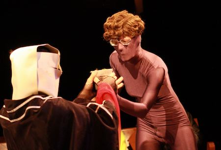

|  | ||
all images and video montage by Chris Reeg
Just a year after Bloody Noes' inception, we heard about - of all things - a "Performance Art Competition" in Rochester. Sponsored by ROCO and staged in MUCCC (when it was a theater-in-the-round), this would be more than a showcase, but an event with 'judges' who would rate and rank the best and worst Performance Art that Rochester had to offer. Kind of an odd call for a town that hadn't really positioned itself as supporting Performance Art (as a form specifically other than theater or music performance) heretofore in any particular way...
Bloody Noes went for it in a cocky way, brought out our most ambiguous props and potent gestures, and took first prize - a check and a chance to headline a performance art showcase at MUCCC. The showcase ended up being a familiar line-up, us and our noise buds ORAA and Tumul that we regularly performed with ... but this time on a Stage at a Theatre.
I do feel sad and weird that the event was A Competition - there was one group, a couple that did something strange and sort of mummenschanz that didn't rank and was never seen or heard from again. Who are you interesting couple? There was also a boy with an acoustic guitar who did a nervous set of coffeehouse music - later we learned that 'it was an act' made to drown the audience in cringe - a painful portrayal of an awkward musician - and we we had just fallen for it. Performance art is hard, guys.
Finally I want to say (should you still be reading) that Bloody Noes has never really identified as 'performance art'. We were born as a noise band and skew towards the visual and action-oriented. Noise itself is the performance art twisted twin of Music - stripping down the entertainments found in rhythm, sound, and instrument to raw components of sonic experience. This was recognizeable to the audience-judges of the competition, who chose a whole slate of noise performers executing perfectly ordinary noise music to embody the performance art showcase. (Or maybe the audience was just stacked with noise fans.)
But to my understanding (and here I speak for me Mary and not necessarily Ian) Bloody Noes are slightly too entertaining to be true performance artists. We aren't devoted to the raw action-of-doing as much as the ability of the raw action to produce spectacle. We are complicated and atmospheric, preoccupied with the mystification of the audience over the simplicity of activity. I know these are fine hairs to split, but I hold tight to my pure definition and respect for the high form Performance Art. We got through that competition much as the coffeeshop boy - acting out what Performance Art might appear to be to people more familiar with Theater or Art. But at heart we posed a theatrical pretense rather than a commited actuality, which is the only thing Performance Art should ever do.